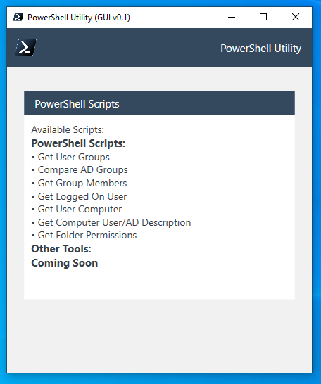

About Me
Hello! I'm Charlie Hardin, an IT professional with over 10 years of experience working across a variety of fields, from customer service and sales to IT support and systems administration, and beyond. With a passion for technology and a strong foundation in customer service, troubleshooting, project management, and problem solving, I've spent my career helping individuals and organizations leverage technology to solve problems and improve efficiency.
I’m a lifelong learner — always diving into new technologies, whether it's mastering the latest cloud services, experimenting with automation, or expanding my skills in software development. I’m passionate about staying on top of the ever-evolving landscape of IT, and I take pride in turning complex technical concepts into simple, actionable solutions.
Whether it’s setting up servers, optimizing IT infrastructures, or providing hands-on support for end-users, I’m all about making technology work for people. I’m constantly exploring new tools, frameworks, and methodologies to keep my skills sharp and my solutions cutting-edge.
Technology isn't just my job; it’s my passion. I’m excited about the future of IT — how it connects people, powers innovation, and shapes our daily lives.
If you're looking for a tech-savvy professional who is both approachable and knowledgeable, let's connect and explore how I can help bring your projects to life!
Work Experience
Dec 2022 - Present
- Provide comprehensive IT consultation to clients, specializing in business infrastructure support, web development services, and hardware repair.
- Deliver strategic technology recommendations and solutions to improve clients' operational efficiency and increase profitability.
- Provide ongoing maintenance and support for clients' web applications, including troubleshooting technical issues and implementing software updates.
- Conduct regular hardware maintenance and repairs to ensure optimal performance and longevity of clients' equipment.
- Perform system upgrades, software installations, and security audits to protect clients' networks and devices from potential cyber threats.
- Train clients on proper technology use and best practices to maximize productivity and minimize downtime.
- Diagnose and resolve hardware and software issues for desktops, laptops, servers, and mobile devices.
- Provide expert-level troubleshooting for network connectivity problems, including LAN, WAN, and VPN issues.
- Conducte root cause analysis to identify recurring technical problems and implement effective solutions.
- Manage and prioritize support tickets across multiple clients, ensuring adherence to service-level agreements (SLAs).
- Deliver exceptional customer service by communicating effectively with end-users to understand and resolve technical issues
Aug 2021 - Nov 2022
- Provide L2 client support and technical issue resolution to all company users/employees.
- Support desktop applications, mobile devices, printers, collaboration & productivity infrastructure via multi-channel support (phone, email, desk side, IM etc.)
- Hardware build activities and software deployment following company standards.
- Manage ticket queues and maintain high customer satisfaction
- Create and contribute documentation for IT Knowledge Base as well as guides for end users
- Microsoft 365 support (Office applications, Teams, SharePoint, OneDrive, etc)
- Exchange Server Administration (On-Prem & EXO)
- Azure AD Admin/Configuration Tasks
- Network support (VPN, Firewall & Proxy troubleshooting, and configuration)
- Mobile Device Management – MobileIron
- Create customized software tools and utilities for automation of IT tasks as well as enhanced support for end users – utilizing PowerShell, C#, .NET
- Help facilitate and assist with company acquisition of new subsidiaries from an IT standpoint
- Work with multiple teams across organization around the globe
- Host new-hire orientation sessions to introduce new employees to company technologies, standards, etc.
- Work with vendors for hardware events, warranty claims, issue escalation, etc.
- Offer consultation and guidance to Level 1 technicians
July 2020 - April 2021
- Provide exceptional customer service to individuals visiting the store, including greeting customers, answering phones, and assessing their needs.
- Exceed monthly revenue goals through acquiring new customer accounts, maximizing existing customers' accounts to identify revenue opportunities, and excelling in quality metrics.
- Assist with all functions within retail store in compliance with company policies and procedures.
- Work with store management in opening, closing, and operating the retail facility, including but not limited to cash handling, inventory count and deposits as governed by operations control standards.
- Assist customers with service activations, changes, and bill payments, responding to billing inquire equipment replacement, selling accessories and processing price plan changes and upgrades.
- Assist in other tasks, duties, or projects as assigned by management.
Feb 2020 (Short Term Contract)
- Deployed new computer assets, installed applications as needed and performed any other initial startup activities.
- Full install of docking stations, new monitors, and all other supplied materials.
- Full data backup/transfer for users.
- Upgraded in-place workstations to Windows 10, ensured network and printer connections.
- Ensured project completion at end of set project dates.
June 2018 - June 2019
- Provided free troubleshooting and repair estimates for client approval.
- Ensured that store had replacement kits and spare parts for any planned repairs, maintained inventory.
- Opened, disassembled, repaired, replaced parts, and reassembled units when done.
- Tested repaired units and advised clients when they could retrieve their units.
- Sold smartphones, and smartphone accessories to customers who visited the store.
- Provided leadership and direction to all employees.
- Trained new employees, teaching best repair practices and store policies, procedures.
- Supported store manager as needed.
July 2016 - May 2018
- Provide IT infrastructure support for local business clients.
- Conduct regular hardware maintenance and repairs to ensure optimal performance and longevity of clients' equipment.
- Perform system upgrades, software installations, and hardware repair/service for various devices including Desktop PCs, Laptops, Tablets, and Smartphones.
- Individual training sessions with clients on various technologies: Windows, MacOS, iOS, Android, Microsoft Office, Adobe Creative Suite
June 2015 - June 2016
- Proactively acknowledged, greeted, and assisted customers in the store.
- Offered customers exemplary and timely service; Provided accurate product information.
- Served multiple customers, discovered their needs, and made recommendations to generate sales.
- Enhanced product knowledge.
- Merchandised, stocked, and replenished the selling floor constantly.
- Maintained working knowledge of store’s policies and procedures.
Sept 2013 - May 2015
- Configure/Maintain Student Network
- Build Custom PCs for classroom use
- Install/Configure software and hardware for classroom PCs (Windows 7, Linux)
- Help Design and Develop school website, mobile web applications for teachers and students to utilize. (HTML, CSS, JavaScript)
- Offer Support and Service to students and staff for various technology needs. (PC support, Printers, Projectors, SmartBoards, Mobile Devices)
- Various projects including keyless entry to “HackerSpace” utilizing Linux, Raspberry Pi; Bluetooth enabled stereo speakers for Gym; Custom Web Apps for teachers to keep track of students, lesson plans, scheduling, etc.
- Earned commendations for teamwork, flexibility, and work excellence in providing IT support to students and faculty.
Skills
Windows
PowerShell
Azure
Microsoft 365
Linux
macOS
Web Development
Mobile Device Management
Customer Service
Problem Solving
Project Management
Adaptability
Projects
A simple GUI for useful PowerShell scripts
